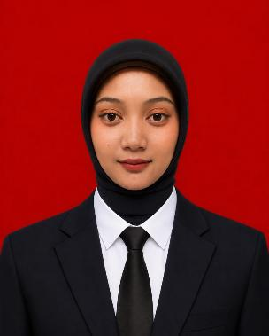

Website
Website Diskominfo Kabupaten Bangkalan
Dikerjakan bersama tim selama magang MBKM (September - Desember 2025): merancang fitur dan antarmuka, pengujian, perbaikan bug, dan dokumentasi.
Lulusan Pendidikan Informatika yang membangun website dan merapikan administrasi, dengan IPK 3,84.

Saya lulusan S1 Pendidikan Informatika Universitas Trunojoyo Madura (2022-2026). Saya teliti, disiplin, dan terbiasa mengelola dokumen, menyusun laporan, mengatur jadwal kegiatan, serta menulis surat-menyurat. Saya juga pernah mengembangkan website sebagai web developer magang. Saya nyaman bekerja sendiri maupun dalam tim, dan siap mendukung operasional administrasi perusahaan.
Dari magang web developer sampai memimpin divisi organisasi, diurutkan dari yang terbaru.
Hasil kerja yang pernah saya kembangkan dan rancang.
Dikerjakan bersama tim selama magang MBKM (September - Desember 2025): merancang fitur dan antarmuka, pengujian, perbaikan bug, dan dokumentasi.
Mengarahkan pembuatan pamflet, brosur, poster, dan presentasi agar sesuai identitas Ikatan Mahasiswa Arosbaya dan mendukung program kerja.
Tingkat keahlian sesuai penilaian saya sendiri di CV.
Pelatihan, webinar, dan keputusan organisasi yang pernah saya peroleh.
Saya siap berkontribusi di bidang web maupun administrasi. Hubungi saya lewat email atau WhatsApp.
norhalimah.pif@gmail.comBangkalan, Madura